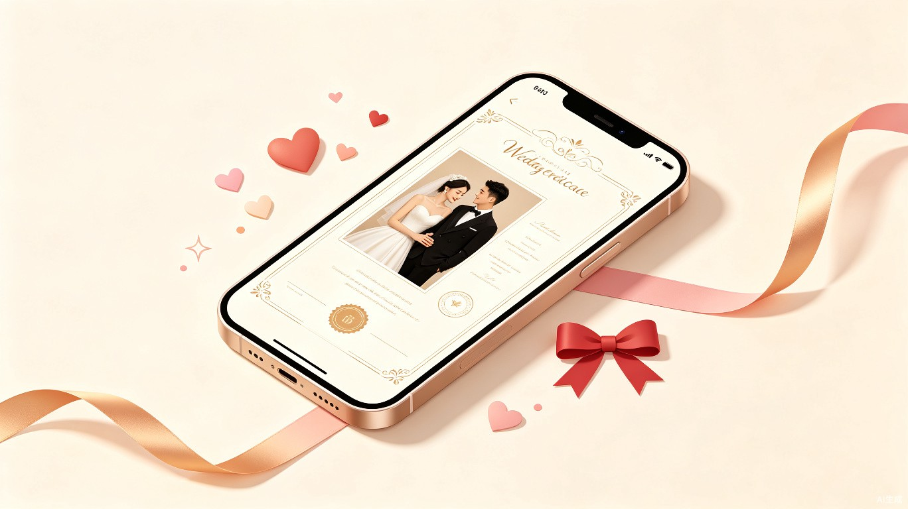

每年中国有超过 700 万对新人登记结婚[1]，结婚登记照是每对新人办理结婚登记时必须提交的材料。传统模式下，新人需要前往照相馆拍摄登记照，面临三个核心痛点：
新人需要专门安排时间前往照相馆，排队等候拍摄、选片、修图，整个流程通常需要 1-2 小时。对于工作繁忙或异地的情侣，协调双方时间更加困难。
照相馆拍摄结婚登记照的价格从几十元到数百元不等，精修费用另计，部分门店存在隐性消费。淘宝冲印服务虽然便宜（2.9-6.7 元/套[2]），但需要自行准备符合标准的照片。
拍摄效果依赖摄影师技术和现场状态，新人往往对成片不满意但又缺乏重拍的勇气。部分新人希望尝试不同风格的着装（如白纱西装、中式礼服、民国风等），但照相馆通常只提供有限的服装选择。
AI 图像生成技术的成熟为解决上述问题提供了新的可能。通过上传生活照片，AI 可以合成符合结婚登记照标准的照片，并提供多种着装风格选择，让用户足不出户即可获得满意的登记照。
| 竞品 | 形态 | 核心功能 | 价格 | 优势 | 不足 |
|---|---|---|---|---|---|
| 结婚证件照 App（iOS） | 原生 App | 自拍/上传照片、精修手绘照、精修正装照、500+ 证件照尺寸 | 免费 + 内购 | 功能全面，尺寸覆盖广 | 需下载 App，AI 合成效果依赖自拍质量 |
| 结婚证件照 App（应用宝） | Android App | 证件照拍摄、换底色、冲印服务 | 免费 + 冲印付费 | 有冲印闭环 | 无 AI 换装能力，模板单一 |
| 淘宝证件照冲印服务 | 电商平台 | 照片冲印、换底色、邮寄到家 | 2.9-6.7 元/套 | 价格极低，销量大（8 万+） | 无 AI 合成，需自备照片 |
| 结婚证照片版生成器（网页） | H5 网页 | 上传正脸照、合成结婚证照片版 | 免费 | 零门槛，即开即用 | 仅合成结婚证内页样式，非标准登记照，无冲印服务 |
| AI Couple Photo Generator | iOS App | AI 生成情侣合照 | 免费 + 内购 | AI 生成能力强 | 面向海外市场，不符合中国登记照标准 |
现有产品存在明显的市场缝隙：
一款基于 AI 图像合成技术的 H5 产品，让准新人通过上传生活照片即可生成符合结婚登记照标准的多风格证件照，并支持电子版下载和实物冲印邮寄到家。
| 维度 | 目标 | 衡量指标 |
|---|---|---|
| 用户体验 | 从上传照片到获得合成结果，全流程不超过 3 分钟 | 平均完成时长 ≤ 3min |
| 合成质量 | 合成照片符合民政部结婚登记照规格要求（2 寸红底双人合照） | 照片规格合格率 ≥ 95% |
| 商业转化 | 合成结果页到冲印订单的转化率 | 冲印转化率 ≥ 15%（[Assumption — to be confirmed]） |
| 用户满意度 | 用户对合成效果的满意度 | 满意度评分 ≥ 4.0/5.0 |
| 用户角色 | 特征 | 核心诉求 | 使用频率 |
|---|---|---|---|
| 准新娘 | 22-35 岁，注重照片美感，愿意为效果付费，是主要决策者 | 照片好看、着装风格多样、操作便捷 | 一次性使用（结婚登记前） |
| 准新郎 | 22-35 岁，配合女方需求，关注流程便捷性 | 操作简单、快速出片、价格合理 | 一次性使用 |
| 备婚亲友 | 帮助新人准备材料的闺蜜、伴娘等 | 替新人代办、批量操作 | 偶尔使用 |
准新人各自在手机上传生活照片，选择心仪的着装模板，AI 自动合成符合标准的结婚登记照。用户预览效果后下载电子版，用于线上提交或自行冲印。
用户在合成结果页直接选择冲印服务，填写收货地址并支付费用，后台生成冲印订单并邮寄实物照片到家。用户可在订单页跟踪物流状态。
用户希望尝试不同风格（西式白纱、中式礼服、民国风、简约正装等），通过切换模板查看不同效果，最终选择最满意的一套。
| # | 模块 | 功能描述 |
|---|---|---|
| F01 | 首页 | 展示产品核心价值主张、功能引导入口、用户案例展示。提供"开始制作"主按钮，引导用户进入照片上传流程。 |
| F02 | 照片上传 | 支持分别上传准新娘和准新郎的生活照片（各 1 张），支持从相册选择或拍照。系统自动检测照片质量（清晰度、人脸完整性），不满足要求时给出提示。 |
| F03 | 模板选择 | 展示多款结婚登记照着装模板（西式白纱、中式礼服、民国风、简约正装等），用户点击选择心仪模板。每个模板展示缩略图和风格名称。 |
| F04 | AI 合成 | 调用豆包 Seedream API，将用户上传的照片按照选定模板进行 AI 合成。合成过程中展示进度动画，预计耗时 30-60 秒。合成完成后生成 2 套备选照片。 |
| F05 | 结果展示 | 展示 2 套 AI 合成的备选照片，支持左右滑动对比。每套照片下方提供"选择此张"按钮，用户点击后进入下载/冲印决策页。 |
| F06 | 照片下载 | 用户选择满意的照片后，可下载电子版高清照片到手机相册。照片符合结婚登记照标准规格（2 寸，红底，35mm×49mm，分辨率 300dpi）。 |
| F07 | 冲印下单 | 用户选择冲印服务后，填写收货信息（姓名、手机号、详细地址），确认冲印规格和数量，支付冲印费用（19.9 元/套，[Assumption — to be confirmed]）。支付成功后创建冲印订单。 |
| F08 | 订单跟踪 | 用户可在订单页查看冲印订单状态（待处理 → 冲印中 → 已发货 → 已签收），展示物流单号和预计送达时间。 |
业务逻辑：首页作为产品入口，展示核心价值（AI 合成、多风格、冲印到家）和用户信任背书（使用人数）。点击"开始制作"进入照片上传页。
交互逻辑：页面加载时展示产品 slogan 和功能亮点 → 用户点击"开始制作"按钮 → 跳转至照片上传页。
规则约束：使用人数为后端实时数据，若接口超时则展示默认文案"已有数千对新人使用"。
业务逻辑：用户分别上传两张照片 → 前端校验文件格式（JPG/PNG）和大小（≤ 10MB）→ 调用后端人脸检测接口验证照片质量 → 两张照片均通过后"下一步"按钮变为可用状态。
交互逻辑：点击上传区域 → 弹出系统相册/相机选择器 → 选择照片后区域显示缩略图 → 两张照片均上传成功后"下一步"按钮激活。
规则约束：照片必须包含清晰人脸，系统通过人脸检测 API 校验。若检测失败，提示"未检测到清晰人脸，请重新上传"。单张照片大小限制 10MB。
边界与异常：网络超时 → 显示"上传失败，点击重试"；照片格式不支持 → 提示"仅支持 JPG/PNG 格式"。
业务逻辑：展示预设的着装模板列表（由运营后台配置）→ 用户点击选择模板 → 下方显示已选模板的详细说明 → 点击"开始 AI 合成"提交合成任务。
交互逻辑：模板以网格形式展示，点击后高亮选中状态 → 已选模板信息实时展示在下方 → 点击合成按钮后进入合成等待页。
规则约束：必须选择 1 个模板才能点击合成。模板数据从后端接口获取，支持运营动态增删。
业务逻辑：前端提交合成任务（包含两张照片 URL + 模板 ID）→ 后端调用豆包 Seedream API 进行图像合成 → 合成完成后生成 2 套备选照片 → 通过 WebSocket 或轮询通知前端。
交互逻辑：进入页面后立即开始合成 → 展示进度条和状态文案 → 合成完成后自动跳转至结果页。
规则约束：合成超时阈值 120 秒，超时后提示"合成时间较长，请稍后在'我的订单'中查看结果"。合成失败时提供"重新合成"按钮。
边界与异常：用户中途关闭页面 → 任务在后台继续执行，用户可通过分享链接或订单记录重新查看结果。API 限流 → 排队等待，展示"前方还有 N 人在排队"。
业务逻辑：展示 AI 合成的 2 套备选照片 → 用户点击"选择此张"进入下载/冲印决策 → 点击"重新选择模板合成"返回模板选择页。
交互逻辑：2 套方案横向排列，支持左右滑动 → 点击某套方案的"选择此张" → 弹出底部操作面板（下载电子版 / 冲印到家）。
规则约束：每套合成结果有效期 7 天（[Assumption — to be confirmed]），过期后需重新合成。预览图带水印，下载/冲印后为无水印高清版。
业务逻辑：用户选择获取方式 → 若选"下载电子版"，直接触发浏览器下载高清无水印照片至手机相册 → 若选"冲印到家"，跳转至冲印下单页填写收货信息。
交互逻辑：两种方式以卡片形式并排展示，点击选中后边框高亮 → 点击"确认并继续"执行对应操作。
规则约束：电子版照片规格为 2 寸（35mm×49mm），300dpi，JPG 格式，红底。冲印服务价格为 19.9 元/套（含 6 张照片 + 包邮，[Assumption — to be confirmed]）。
业务逻辑：用户填写收货信息 → 前端校验必填字段（姓名、手机号、地址）→ 点击"确认支付"调起微信支付 → 支付成功后创建冲印订单 → 跳转至订单详情页。
交互逻辑：表单字段实时校验 → 手机号格式校验（11 位数字）→ 支付按钮在表单填写完整前为禁用状态 → 支付成功后展示订单确认页。
规则约束：收货信息必须完整才能提交。支付超时 15 分钟自动取消订单。订单创建后不可修改收货信息（[Assumption — to be confirmed]）。
边界与异常：支付失败 → 提示"支付未完成，可在订单页继续支付"；库存不足（冲印服务商产能饱和）→ 提示"当前订单较多，预计延迟 1-2 天"。
业务逻辑：展示订单基本信息（订单号、状态）→ 以时间线形式展示订单流转状态 → 展示物流单号和预计送达时间。状态流转：待支付 → 待处理 → 冲印中 → 已发货 → 已签收。
交互逻辑：用户可从首页"我的订单"入口或支付成功页进入 → 页面自动刷新订单状态（每 30 秒轮询一次）→ 点击物流单号可跳转至快递公司查询页。
规则约束：订单状态由后端冲印服务商回调更新。若 48 小时未发货，系统自动推送提醒给运营人员。用户可在"已发货"状态前申请退款（[Assumption — to be confirmed]）。
flowchart TD
A["用户打开 H5 页面"] --> B["首页：点击'开始制作'"]
B --> C["上传页：上传新娘 + 新郎照片"]
C --> D{"照片质量检测"}
D -->|"不通过"| E["提示重新上传"]
E --> C
D -->|"通过"| F["模板选择页：选择着装风格"]
F --> G["提交合成任务"]
G --> H["合成等待页：展示进度"]
H --> I["调用豆包 Seedream API"]
I --> J{"合成是否成功"}
J -->|"失败"| K["提示重新合成"]
K --> F
J -->|"成功"| L["结果页：展示 2 套备选方案"]
L --> M["用户选择满意方案"]
M --> N{"选择获取方式"}
N -->|"下载电子版"| O["下载高清照片到手机"]
N -->|"冲印到家"| P["填写收货信息 + 支付 19.9 元"]
P --> Q["创建冲印订单"]
Q --> R["冲印服务商处理订单"]
R --> S["邮寄照片到用户地址"]
S --> T["用户签收"]
sequenceDiagram
participant U as 用户
participant H5 as H5 前端
participant S as 后端服务
participant Pay as 微信支付
participant P as 冲印服务商
U->>H5: 选择冲印，填写收货信息
H5->>S: 提交订单信息
S->>S: 创建待支付订单
S->>H5: 返回订单信息
H5->>Pay: 调起微信支付
U->>Pay: 完成支付
Pay->>S: 支付成功回调
S->>S: 更新订单状态为"待处理"
S->>H5: 跳转订单详情页
S->>P: 推送冲印任务（照片 + 规格）
P->>P: 冲印制作
P->>S: 回调"已发货" + 物流单号
S->>H5: 推送物流信息
P->>U: 快递送达
| 依赖项 | 用途 | 提供方 | 风险等级 |
|---|---|---|---|
| 豆包 Seedream API | AI 照片合成（人像换装、背景替换） | 火山引擎 | 高 |
| 人脸检测 API | 上传照片质量校验（人脸清晰度、完整性） | 火山引擎 / 腾讯云 | 低 |
| 微信支付 | 冲印订单支付 | 微信支付 | 低 |
| 冲印服务商 | 照片冲印 + 快递邮寄 | 第三方冲印厂（待选定） | 中 |
| 快递物流 API | 物流单号查询与状态追踪 | 快递 100 / 顺丰 API | 低 |
| 对象存储（OSS） | 用户上传照片和合成结果的存储 | 阿里云 OSS / 腾讯云 COS | 低 |
| 风险 | 概率 | 影响 | 应对策略 |
|---|---|---|---|
| Seedream API 合成效果不稳定，人脸失真 | 中 | 高 | 建立合成质量评估机制，设置人工审核环节；准备备用 AI 模型方案 |
| API 调用量突增导致限流或超时 | 中 | 中 | 实现任务队列和排队机制；设置合理的超时重试策略 |
| 冲印服务商产能不足或质量不达标 | 低 | 高 | 签约 2 家以上冲印服务商作为备份；建立质量抽检机制 |
| 用户照片涉及隐私泄露 | 低 | 高 | 照片加密存储，合成完成后定期清理原始照片；隐私政策明确告知 |
| 合成照片不符合登记照官方标准 | 中 | 中 | 合成结果自动校验规格（尺寸、背景色、分辨率）；提供规格说明引导用户 |
| 指标类型 | 指标名称 | 定义 | 目标值 |
|---|---|---|---|
| 过程指标 | 页面访问量（PV/UV） | 每日访问页面的独立用户数和页面浏览数 | — |
| 过程指标 | 照片上传成功率 | 上传照片通过质量检测的比例 | ≥ 85% |
| 过程指标 | AI 合成成功率 | 合成任务成功返回结果的比例 | ≥ 90% |
| 结果指标 | 电子版下载率 | 合成结果页用户选择下载电子版的比例 | ≥ 40% |
| 结果指标 | 冲印转化率 | 合成结果页用户选择冲印并成功支付的比例 | ≥ 15% |
| 结果指标 | 客单价 | 平均每笔冲印订单金额 | 19.9 元 |
| 体验指标 | 平均完成时长 | 从进入上传页到获得合成结果的平均时间 | ≤ 3 min |
| 体验指标 | 用户满意度评分 | 结果页用户主动评分的平均分（5 分制） | ≥ 4.0 |
| 事件名称 | 触发时机 | 关键参数 |
|---|---|---|
| page_view | 页面加载完成 | page_name, source |
| photo_upload | 照片上传成功 | role (bride/groom), file_size, upload_duration |
| template_select | 用户选择模板 | template_id, template_name |
| synthesis_start | 提交合成任务 | template_id, photo_count |
| synthesis_complete | 合成任务完成 | task_id, duration, success (bool) |
| result_view | 查看合成结果 | task_id, plan_count |
| photo_download | 下载电子版照片 | task_id, selected_plan |
| order_create | 创建冲印订单 | order_id, amount, template_name |
| payment_success | 支付成功 | order_id, amount, payment_method |
| # | 问题 | 影响范围 | 负责人 | 状态 |
|---|---|---|---|---|
| Q1 | Seedream API 在人像换装场景的实际效果如何？是否需要微调或额外训练？ | 核心功能可行性 | 技术负责人 | 待验证 |
| Q2 | 冲印服务商的选定：合作模式（按单结算/包月）、产能、质量标准、物流方式？ | 冲印闭环 | 产品/运营 | 待确认 |
| Q3 | 冲印定价 19.9 元/套的成本结构是否合理？毛利空间如何？ | 商业模型 | 产品/财务 | 待确认 |
| Q4 | 用户是否需要登录？还是完全匿名使用（通过链接访问订单）？ | 用户体验 / 技术架构 | 产品 | 待决策 |
| Q5 | 合成照片的版权归属？用户协议中如何约定？ | 法律合规 | 法务 | 待确认 |
| Q6 | 是否需要支持微信小程序形态？还是仅 H5？ | 技术选型 / 获客渠道 | 产品 | 待决策 |
| Q7 | 用户照片的存储周期和清理策略？GDPR/个人信息保护法合规要求？ | 隐私合规 | 技术/法务 | 待确认 |